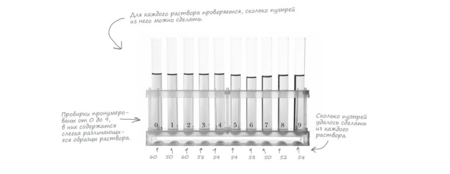

Головна > Тема 7
Масиви
Розглянемо малюнок. Відома компанія перевіряє скільки бульбашок дає кожен з різновидів розчинів. Як же зберегти ці дані? Використаємо масиви.
var scores = [60, 50, 60, 58, 54, 54, 58, 50, 52, 54];Звернення до елементу масиву:
var solution2 = scores[2];
alert("Solution 2 prodeced" + solution2 + "bubbles");Створимо масив для зберігання сортів морозива:
var flavors = ["vanilla", "butterscotch", "lavender"];Індекс також використовується для зміни значень, що зберігаються в масиві.
Щоб знайти довжину масиву, використовується властивість length:
var numFlavors = flavors.length;- Порожній масив:
var emptyArray = [];- Не обов’язково зберігати всі дані одного типу:
var mas = [1, 2, "test", 4, 5];- Що буде якщо звернутися до завеликого або замалого індексу масиву? Отримаєте результат undefined.
- Length завжди на 1 більше останнього індекс. Тож щоб отримати останній елемент:
var lastElement = myArray[myArray.length - 1];Розглянемо малюнок. Треба вивести список усіх зразків і результатів по кожному зразку. Загальну кількість зразківі, max результат i N зразків де він досягнутий.
Через цикл while:
var scores = [60, 50, 60, 58, 54, 54, 58, 50, 52, 54];
var output;
var i = 0;
while (i < scores.length) {
output = "Bubble solution #" + i + "score: " + scores[i];
console.log(output);
i = i + 1;
}Цикл for
for (var i = 0; i < scores.length; i = i + 1) {
output = "–||–||–";
console.log(output);
}- Можна використовивати цикл for без лічильника:
for (; answer != "forty-two";) { }- i=i+1; ≈ i++;
- i=i-1; ≈ i--;
Завдання: написати програму знаходження max. Елементи з максимальним рзультатом будемо заносити в масив, який потім виведемо.
І спосіб
var genres = []; // порожній масив
genres[0] = "Rockabilly";
genres[1] = "Ambient";
var size = genres.length;II спосіб
var genres = []; // порожній масив
genres.push("Rockabilly");
genres[1] = "Ambient";
var size = genres.length;- Не заповнені елементи масиву мають значення undefined. Перевірка масиву на undefined:
if (myarray[i] == undefined) { ... }- Масив з 3 порожніми позиціями:
var myarray = new Array(3);Код виведення списку зразків з максимальним значенням:
var bestSolutions = [];
for (var i = 0; i < scores.length; i = i++) {
if (scores[i] == highScore) {
bestSolutions.push(i);
}
}
console.log("Solutions with the highest score: " + bestSolutions);
console.log передбачає виведення елементів масиву не використовуючи цикл, через кому.
Закріплення знань
Написати програми:
1) Поміняти місцями max i min елементи масиву.
var array = [23, 32, 12, 14, 1, 4, 6];
var max = array[0];
imax = 0;
var min = array[0];
imin = 0;
console.log(array);
for (var i = 0; i < array.length; i++) {
if (max < array[i]) {
max = array[i];
imax = i;
}
if (min > array[i]) {
min = array[i];
imin = i;
}
}
array[imax] = min;
array[imin] = max;
console.log(array);
2) Вивести елементи масиву більші попереднього.
var array = [3,1,2,3,3,5,6,7,8,4];
for (var i = 1; i < array.length; i++) {
if (array[i] > array[i-1]) {
console.log(array[i] + " більше попереднього елементу");
}
}3) Знайти кількість додатніх елементів масиву.
var array = [23, -32, 12, 14, -1, 4, -6];
var k = 0;
console.log(array);
for (var i = 0; i < array.length; i++) {
if (array[i] > 0) {
k = k + 1;
}
}
console.log("Кількість додатніх елементів масиву = " + k);
4) Знайти суму додатніх двозначних елементів масиву.
var array = [23, -32, 12, 14, -1, 4, -6];
var n = 0;
console.log(array);
for (var i = 0; i < array.length; i++) {
if (array[i] > 0 && array[i] > 9 && array[i] < 100) {
n = n + array[i];
}
}
console.log("Сума додатніх двозначних елементів масиву = " + n);